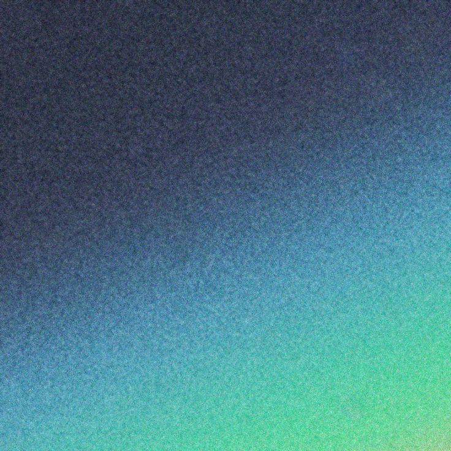
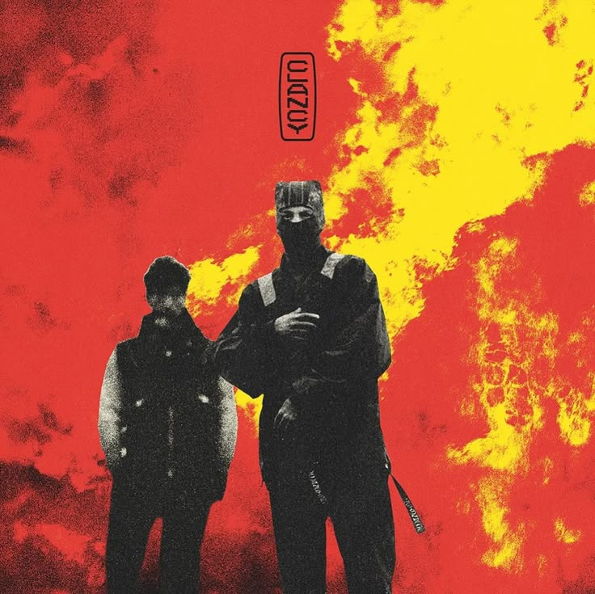
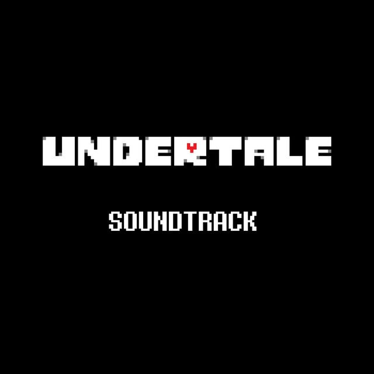
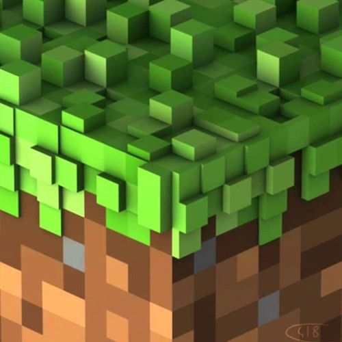
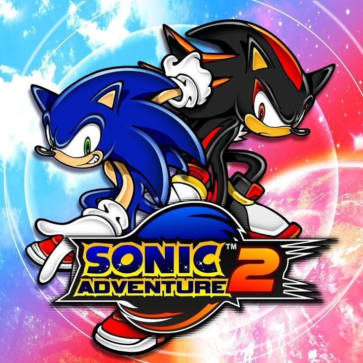

Favorites
Artists & Bands
- My Chemical Romance
- Twenty-One Pilots
- Lewis Capaldi
- Post Malone
- Blink-182
- Coldplay
- Panic! At The Disco
- Olivia Rodrigo
- Fall Out Boy
- Kanye West
- Green Day
- Joji
I love these artists/bands for diverse reasons. For one, I love Twenty-One Pilots because of the connection it has to an old friend I lost contact with. Blink-182 was introduced to me by one of my exes. Fall Out Boy was a key part of my early emo phase. Joji helped me feel like I wasn't alone through my depressive spell. Olivia Rodrigo was there through my white-girl edgy Christmas era. Coldplay was just easy-going Mormon music. And Lewis Capaldi -- he was there to help me make peace with my failed relationships, family losses, and unresolved heartache.








Movies and Shows
- Scott Pilgrim [show and film]
- Lord of The Rings [1-3]
- Dark Knight Trilogy
- Harry Potter [1-8]
- Star Wars [1-6]
- The Prestige
- Interstellar
- Inception
- Redline
- Memento
- Fosters Home For Imaginary Friends
- Code Name Kids Next Door
- Avatar The Last Airbender
- Kiki's Delivery Service
- Howl's Moving Castle
- Castle In The Sky
- Spirited Away
- Hey Arnold!
- Code Lyoko
- Teen Titans
The list will update as I remember what I've seen. I will say though -- I need to double check parents guide on some media to organize what's appropriate for what age range, and particularly what is appropriate for my future kids. It would be nice to have the morals set in stone for my family instead of settling for less when you're burnt out from work and don't want to fight pre-established habits.
I'm currently watching through The Clone Wars for the first time. I saw a few episodes growing up, but never got around to watching the full series. I know very little about it except that it starts around episode 2 and that it explains a lot more about Maul and the gradual corruption of Anakin Skywalker. Once I complete the series, I can start a few others that Disney has whipped up.
After Clone Wars, I could either watch Maul, or Rogue 1 and Andor. It really depends on how cloe I want to follow the main story, and what characters I'm the most attached to. For characters I'm incredibly attached to -- I loved Scott Pilgrim.
Scott Pilgrim turned out to be a slept on IP that is my current absolute favorite. Watching the original film with a friend, the script just screamed my kind of humor. Every time I'd deviate the script to make a joke, the script was already headed in that direction. From there, I had to watch the film at least 2 more times and watch the Netflix orignal series Scott Pilgrim Takes off. For aesthetic, the artstyle, the vibrant colors, the stubby proportions, it all gave off an intimate and cozy vibe that just resonates with me. After watching the show once, I know I need to see it again.